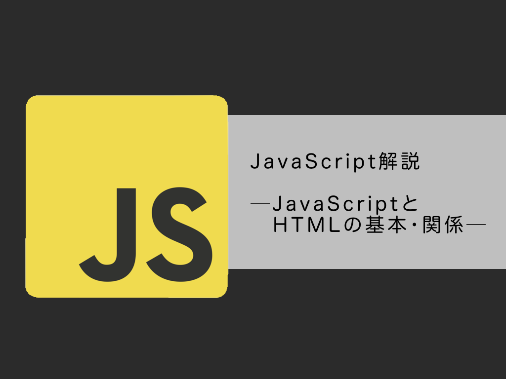

【JavaScript入門】JavaScriptとHTMLの基本・関係
最終更新: 2024/08/12
Webページの作成には、最低限HTMLやCSSが必要ですが、
それだけでは文字を読むだけの単調なサイトになってしまいます。
そこでJavaScriptを用いると、様々な動きのあるサイトに仕上げることができます！
このページでは、JavaScriptとHTMLの基本から活用方法までを解説していきます。
JavaScriptは、Webブラウザ上で動作するプログラミング言語です。
Webページに複雑な機能を実装することができる他、Webサービスを実装したりすることが出来ます。
また、スクリプト言語の一種であるため、即座に実行が可能であり、迅速な開発が行えます。
似たような名前の「Java」という言語があります。
JavaはSun Microsystems社が開発した、JVMという仮想マシン上で動作し、
バックエンド（ユーザーが直接触れない部分）の開発に用いられる言語です。
Javaはコンパイラ言語といって、事前にコンパイルする言語です。
コンパイラ言語なので処理スピードが速く、様々な場面で用いられます。
一方、JavaScriptはNetscape Communications社が開発した、フロントエンド（ユーザーが直接触れる部分）の開発に用いられる言語です。
活用例は後述しますが、スライドショーの作成やポップアップウィンドウの表示などが出来ます。
また、一般的なブラウザにはJavaScriptを実行する機能が標準で搭載されている為、
ブラウザさえあれば実行できるのも大きな特徴です。
上記の通り、JavaとJavaScriptは開発した会社から使用用途まで全く違う言語です。よく「メロンとメロンパンくらい違う」という例え方をされます。
HTMLは「HyperText Markdown Language」の略称で、 Webページを記述する際に用いるマークアップ言語です。 <a></a>や<strong></strong>などの「タグ」と呼ばれるものを使ってマークアップすることでページ構造を定義する言語です。 よくCSSと併せてWebページの開発に用いられているのでご存じの方も多いかもしれませんね。
HTMLでJavaScriptを読み込む方法は大きく分けて
- HTMLファイル内に直接記述する
- 外部ファイルを読み込む
まずは、HTMLファイル内に直接記述する方法です。
この方法では、bodyタグまたはheadタグの中に<script></script>を用いて記述します。
<!DOCTYPE html>
<html lang="ja">
<head>
<meta charset="utf-8">
<title>bodyに記述する</title>
</head>
<body>
<button onclick="showAlert()">
ここをクリック</button>
<script>
function showAlert() {
alert("ボタンが押されました")
}
</script>
</body>
</html>bodyタグ内にJavaScriptを記述してみました。
bodyタグ内にscriptタグがあり、その中にJavaScriptのコードが記述されています
（headタグ内にJavaScriptを記述する場合も方法は全く同じなのでここでは割愛します）。
HTMLファイル内に直接記述する方法は、短いコードであったり、
そのページにのみ処理を適応したい場合には有効な方法です。
しかし、違うページに同じ処理を適応したい場合、
HTMLファイル内に直接記述すると重複コードが発生してしまいます。
その他、HTMLファイルの読み込み中にJavaScriptが読み込まれるので、ページの読み込みが遅くなります。
1. で発生してしまう重複コードを省くためにこちらの方法が良く使われています。
ここでは、適応したい処理を記述したJavaScriptのファイル名を"main.js"とします。
<script src="main.js"></script>上記のようにscriptタグでsrc属性をつけてファイルを指定するとJavaScriptを適応することが出来ます。
当然、正しくパスを指定すればファイル分けをしていたとしても問題なく動作します。
また、このコードを記述する場所は</body>の直前が推奨されています。
先ほども述べましたが、途中でJavaScriptファイルが読み込まれてページの読み込みが遅くなる事を避ける為です。
ここからはJavaScriptとHTMLを組み合わせて制作されているものをいくつか紹介します。
簡単なフェードインのアニメーションを作成してみました。
このくらい簡単なアニメーションであればCSSでも十分ですが、
「スクロールして見えるようになるまでアニメーションを再生しない」
という処理はJavaScriptがなければ実装できません。
その他、背景に動画を埋め込んで動きを与えたり、
スクロールに合わせて背景や手前の要素が動くパララックスなどを実装することが出来ます。
画像が上の例のようにスライドショー形式で掲載されているサイトを見たことが一度はあると思います。 このようなスライドショーはJavaScriptを用いて制御されている場合がほとんどです。
×
ポップアップ
この小さいウィンドウを表示する機能がポップアップウィンドウです。
ユーザーが何かしらアクションを起こした際、確認や情報の提供を目的として表示されます。
ポップアップウィンドウは、通常JavaScriptを用いて作成されます。
お問い合わせフォームなどのフォームもJavaScriptで制作されています。 入力値を確認し、記入漏れがあると 「必要項目が記述されていません」などのエラーを表示させることなどもできます。
このページでは、JavaScript/HTMlの概要から活用例までを解説しました。
このページで紹介した活用例はほんの一部ですが、JavaScriptを取り入れるとより複雑な動きを実装することが出来ます。
是非JavaScriptを習得して活用してみて下さい。
書いた人: ゆきねこ｡
高専生です。プログラミングを主に勉強しています。
制作時間: 約15時間